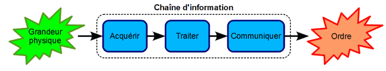
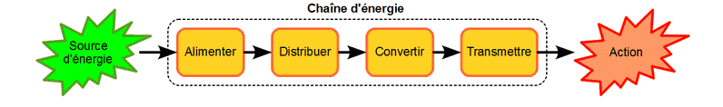
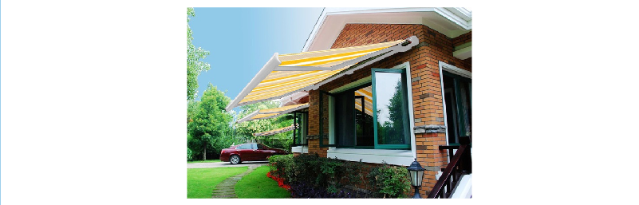
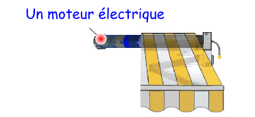
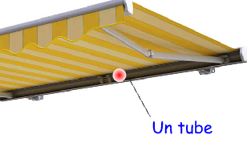
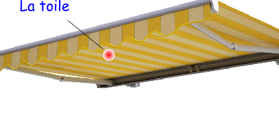
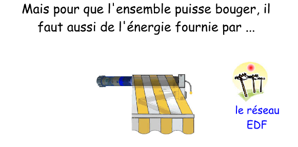
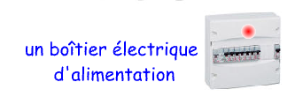
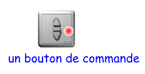
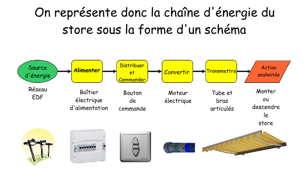

Chaînes fonctionnelles
Synthèse sur les chaînes d'information et d'énergie.
La chaine d'information
Présentation
Pour produire des ordres, un système automatique doit connaitre les informations provenant de l'utilisateur ainsi que les états du système lui-même et de son environnement.
Les états et les consignes sont des grandeurs physiques détectées et mesurées par des capteurs.
L'analyse de ces données est assurée par un circuit électronique qui ensuite envoie les ordres à exécuter.
La chaine d'information est l'ensemble des fonctions techniques et des solutions technologiques qui participent à la prise des décisions par le système automatique.
Schéma fonctionnel
Fonctions techniques :
La chaine d'information est composée de 3 blocs fonctionnels :
Acquérir : les grandeurs physiques externes sont traduites en signaux électriques par les capteurs.
Traiter : le programme de l'unité de commande analyse les informations et prend les décisions.
Communiquer : les ordres sont envoyés à la chaine d'énergie et des signaux sont adressés à l'opérateur.

Solutions technologiques :
Pour assurer chacune de ces 3 fonctions techniques, il existe de nombreuses solutions technologiques :
Acquérir : capteur logique, analogique ou numérique (interrupteur, bouton-poussoir, clavier, anémomètre, cellule photoélectrique, détecteur infrarouge, thermistance...).
Traiter : circuit intégré, microprocesseur, microcontrôleur, calculateur, circuit de commande, module logique, automate programmable...
Communiquer : carte électronique, fil électrique, fibre optique, liaison sans fil, connexion réseau...
Exemple: Dans une maison moderne, le thermostat régule la température de la pièce.
L'utilisateur choisit une temp'rature de consigne...
Composition de la chaine d'information d'une régulation de température :
Grandeurs physiques : la température souhaitée (consigne) et la température réelle (état).
Acquérir : le thermostat est le capteur qui mesure la température de la maison.
Traiter : le circuit intégré compare la température mesurée à celle désirée.
Communiquer : la carte électronique envoie le bon ordre en fonction de la température.
Ordres : déclencher ou arrêter le chauffage.
La chaine d'énergie
Présentation
Pour effectuer des actions, un système automatique a besoin d'être alimenté par une source d'énergie.
Bien que les énergies intervenantes soient très variées (électrique, mécanique, thermique, hydraulique, pneumatique...), le principe est toujours le même. Les ordres provenant de la chaine d'information autorisent :
La distribution de la bonne quantité d'énergie dans le système.
La conversion de l'énergie par des actionneurs.
La transmission de l'énergie aux effecteurs.
Identifier les composants qui assurent ces différentes fonctions permet de comprendre le fonctionnement du système.
La chaine d'énergie est l'ensemble des fonctions techniques et des solutions technologiques qui participent à la réalisation des opérations par le système automatique.
Schéma fonctionnel
Fonctions techniques :
La chaine d'énergie est composée de 4 blocs fonctionnels :
Alimenter : l'énergie externe est adaptée pour le bon fonctionnement du système.
Distribuer : un distributeur fait varier la quantité d'énergie en fonction des ordres reçus.
Convertir : un actionneur transforme l'énergie en une autre.
Transmettre : un mécanisme transfère cette énergie vers l'effecteur afin de générer une action.

Solutions technologiques :
Pour assurer chacune de ces 4 fonctions techniques, il existe de nombreuses solutions technologiques :
Alimenter : bloc / boitier d'alimentation, coffret / tableau électrique, fils électriques, pile, coupleur de piles, batterie, accumulateur, transformateur, panneau photovoltaïque...
Distribuer : contacteur, relais, inverseur, variateur, régulateur, distributeur, vanne...
Convertir : actionneur (moteur, vérin, résistance, sirène, haut-parleur, électroaimant, voyant, écran...).
Transmettre : engrenage, réducteur, embrayage, bielle, bras, poulie / courroie, pignon / chaine, crémaillère / vis sans fin...
Exemple: Conversion des énergies:
Pour se protéger du soleil, beaucoup de propriétaires équipent leur maison d'un store.

Un store électrique comporte:

qui entraîne en rotation

autour duquel s'enroule


qui aliment ensuite

chargé de distribuer l'énergie vers

et c'est finalement le bouton de commande qui pilote le moteur.

Composition de la chaine d'énergie d'un store automatique :
Source d'énergie : l'électricité.
Alimenter : le boitier d'alimentation fournit l'énergie électrique à tout le système (partie commande et partie opérative).
Distribuer : les contacteurs amènent l'électricité au moteur en fonction des ordres reçus.
Convertir : le moteur transforme l'énergie électrique en énergie mécanique.
Transmettre : les engrenages réduisent la vitesse de rotation du moteur et font tourner le tube d'enroulement de la toile.
Action : l'ouverture ou la fermeture du store.